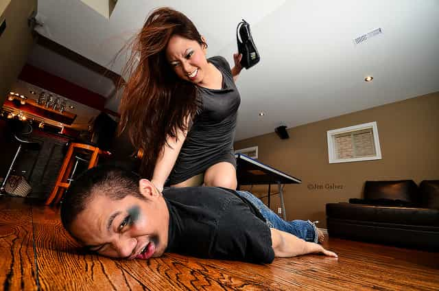
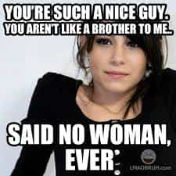
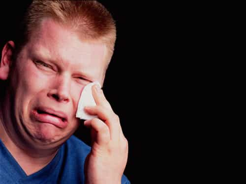
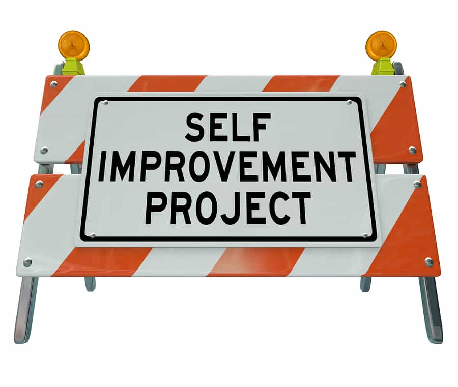

< < < Back
11 Hard Truths I Learned From Taking The Red Pill – Return Of Kings
For most of my life, I’ve been that friendly small town guy, a likable guy who always seemed to establish a good feeling and friendly rapport with the people I meet. The kind who would stop to help a stranger with a flat tire or that a father wouldn’t mind taking his daughter to dinner. I was the type of fellow you could invite over to visit your house without even the slightest concern about anything going wrong. And yet, at the hands of a woman, I was so vulnerable and so prone to error.
Having been the classical “nice guy” I was for so many years, I can recall many instances of humiliation, wasted time/money/effort, missed opportunities for romance and sex, and much more. I have a number of stories regarding dating women in which, after always being the best gentleman I could, I simply couldn’t fathom how it was that the girl I pursued ended up giving her attention, and worst of all sex, to some loser, all while I was waiting with baited breath, ever devoted and waiting for the sweet princess I desired to give me the chance to make her happy.
I spent many a dark night sitting in my little Toyota MR2 beside a lake with nothing more than a bit of classic rock and Bud Light to ease the pain, trying to understand what mistake I possibly could have made to keep the object of my affections from being mine. I felt sorry for myself as I was the downtrodden Mr. Sweet Guy.
It was during a recent long-term relationship in which the woman I was with (an authentic Latina, not an Americanized watered-down version) gave me some of the most painful and emotionally damaging moments of my life. Many truths were revealed to me. But the truth was, like many men, the unpleasant facts of life had been in front of my face all this time. I simply had to be knocked into reality. My new discovery of wonderfully blunt and honest manosphere outlets like Roosh, Return of Kings and Heartiste has helped in filling in the gaps to many formerly mysterious concepts.
As a relatively new taker of the red pill truth, allow me to share with you some of my hard-earned lessons in which red pill truths were harshly shown to be true:
1. Women will treat you the way you allow them to

The “nice guy” is meek, humble, and sadly in many cases, submissive to a woman. This is the root of the problem. In his race to be all that she needs, he attempts to please her, and in his quest to be the lovable underdog who makes her happy in order to win her over, he often shows no resistance to her undesirable behavior. Instead he shows weakness.
In all cases where a woman took advantage of me, disrespected me, or otherwise acted out of line, the cold truth I see is this: I allowed it. I didn’t put a bitch in her place. I didn’t hold firm to a “NO!” or show her the door. I didn’t know what frame was, and sure as hell didn’t maintain it.
You can’t depend on a woman to be a sweet fairy princess. Even the best woman will get out of line sometimes. Be prepared to maintain your boundaries and if necessary walk out the door. You’re the man-you don’t take shit from a woman. And women don’t get a wet vagina from being with a passive, weak man who they secretly despise for his lack of fortitude.
2. Being the classic “nice guy” means being a sucker… and not getting laid

As I mentioned above, the “blue pill” man has a theme that’s consistent: he works too hard and sets up his thoughts, emotions, and more to please a woman, always ready at the helm to spend money on her or do things for his precious damsel.
Hence he can be manipulated. Being able to be talked into spending large amounts of money or giving Ms. Perfect a ride to another man’s house are some simple examples of passive stupidity that such men demonstrate.
I recall many times doing hard work out of the “goodness of my heart” (beta desperation) only to have the girl run off to some dickhead. In one case I tinted the windows in the Nissan Pulsar of one girl who was the apple of my eye many years ago, only to see her run off later to another “bad boy” while I sat home alone again. So much for appreciating the nice things I did ever-so-galantly!
Or I sent money to other women, only for it to be forgotten down the road. Enough. I’m no longer a sucker, but I’ll be helpful when I feel it’s justified. And remind a woman she has to “pay me back.”
Classic “nice guys” think they’re being “decent human beings” by not escalating and pursuing sexual opportunities all while providing the benefits of emotional, moral, and financial support without any worthwhile return on their investment. To be a “nice guy” is to be a fool at the hands of woman.
3. “Oneitis” = weakness

Oh sure, monogamy is necessary for a long-term relationship, but how many times have we seen this story: “She’s a real bitch sometimes, but I don’t want to lose her. I love her, man… uuurrrrr.” And then the poor Schmoe continues a life of suffering, nagging, and general misery because he’s so needy and dependent upon that “one true love.” Even worse if she humiliates him and cheats on him with a more “exciting” alpha-type until he drops her and needs her nice guy provider (a.k.a., “plan B”).
It should go without saying that neediness and dependency are signs of a man with emotional weakness. I’m speaking from experience. It’s not easy to break free from that stranglehold our hearts and minds seem to keep us in sometimes. A man who’s suffered enough will be more apt to accept this truth and break free, and a man who’s warned beforehand can also know to avoid these situations.
The truth is when you’re too dependent upon someone you’re setting yourself up for failure. Another red pill truth: there are more women out there. She’s not one in a million, but one OF a million.
Accept this truth: she can be replaced. Treat a good woman well, but don’t invest 100% in a woman. When things come crashing down, you’ll fall hard. To give a woman that much control over your life is to lose yourself.
4. Don’t tolerate being “friendzoned”
One particularly harsh lesson I’m embarrassed to admit I learned: once upon a time I had a fondness towards one Dominican woman I met. As time went by, I kept trying to be that helpful, nice guy, only to find her keeping me at arm’s length without even being honest enough to tell me the truth. Funny how I was interesting enough when she needed help with putting some equipment together, or when she felt like going out for dinner (with me foolishly paying 100% of the bill of course).
With little surprise to most of us here, I found out she been visiting other guys and more. I was good enough for validation, paying for meals, and helping when she needed it but nothing more.
Being “friendzoned” should not be tolerated. To allow it means you allow yourself to used, abused, and disrespected. And as I’ve learned, once in the friendzone, it is almost impossible to climb out—the woman has already decided you have little sexual market value (SMV) to her. Don’t waste your time—move the fuck on.
Don’t be there to be that “sweet nice guy” she calls to fix her new hair dryer before she goes out later that night to give Mr. Cool a blow job. Doing otherwise sets you up for disrespect and to be a provider and the shoulder to cry on when the guy she gave anal to ends up breaking her heart.
5. Women want to be led
In the most recent long-term relationship that I mentioned earlier, with the Latina, she often became more and more annoyed and put off by my lack of leading and handling things, both big or small.
As time went on, she came to lose respect for me as I wasn’t taking control of where we went, our plans for time spent together, and more. A woman who is with a man who is not in charge – no matter what feminist propaganda or magazine snippets claim – is a woman who loses respect for him and resents him.
In the quest to be “nice” and “easy to please her,” I lost my position as the leader in the relationship. The consequences are at the minimum having a woman getting bitchy with you, and at the worst cheating on you with a more dominant and confident man, then one day divorcing you while you pay the rent for she and her new bad boy lover.
Don’t believe me? Check out some of the marriage forums on the internet. It can be quite eye opening.
You also can’t give a woman everything she wants, as I once did. I was even told, at one point, “I need to be told NO sometimes. I might not like it, but I respect it.” Yes, a woman told me that. Can it possibly get any more clear? A woman needs to know you aren’t a pushover, and you have to keep her from going out of bounds or attempting to take a route that a good leader wouldn’t allow.
Get yourself out of this easy-going, afraid-to-anger-her mentality. Examine your behavior and words every day. Be confident, and make decisions. Delete the “what do you want to do dear?” (indecisiveness) and replace with “We’ll go for a drink” (strong decisiveness) with a bit of flexibility thrown in.
6. The western ideals for femininity and beauty are crap
I grew up in a small town in Alabama where women were quite plain. I never saw a woman in a sexy, fine dress or extremely feminine attire (makeup, accessories, and more). Honestly, I never knew what a truly beautiful, feminine woman could mean.
After moving to a bigger city for my professional career, I did see slightly better examples of womanhood, but unfortunately now that my perspective has changed the truth is now clear to me: the average American woman is plain, dresses far too casually, is overweight, and puts little value in sexual attraction. Plain, naked faces in dire need of some eyeliner and makeup are everywhere.
After traveling to Colombia and a few other countries, my perspective was forever changed. Average women in other cultures take pride in being feminine and maximizing their sexual attraction. One of my favorite types is a fine Latina in ass-tight jeans and sexy high heels, along with matching earrings, painted nails, dolled-up hair, and a little bit of eyeliner. I have seen feminine latin women as old as 50 who were more sexy than some 35 year old women here.
Check out a few videos of Brazilian TV shows or Colombian girls out dancing. Look at pictures of Ukranian, Latvian, or Polish women. How many plain Janes do you see? Food for thought!
While back here in the USA, morning radio shows refer to women who are no more than 5s or 6s as “hot” or “sexy and fine.” Talk about pathetic standards. I simply had no frame of reference before, but everyday now I see the man-jawed women alongside fatties in my workplace realistically: they’re plain and ugly. They don’t try. For better or for worse, once the red pill truth hit me, I’ve never seen women the same anymore. It’s like the filter was taken off the camera.
Unfortunately, it is getting worse now as the fat acceptance movement is attempting to promote fat women as beautiful. In all fairness, American men typically have a lot of room for improvement too, but that’s a subject for another day.
7. People won’t like that you’re pursuing foreign women, especially American women
Despite the fact that mixed-culture relationships are often good ones which benefit both the man and woman, one of the more interesting things I’ve noticed over the years is the following responses when discussing my interest in foreign women:
“What, you can’t get a woman here?”
”It‘s too dangerous there.”
“She’s probably just trying to get a green card.”
“No, you need to get a woman close by.”
”Plenty of nice girls around here, you shouldn‘t need to do that” (In other words, lower your standards, and conform)
“Not me I just couldn’t do it.” (Along with failing to admit not having enough courage to even try)
I also receive condescending looks and attitude, with a look of disapproval thrown in for good measure.
Whether or not it is a good idea to pursue foreign women is not the issue. The smart man already knows what the risks are, and knows the value in a sincere, more traditional woman who is worth pursuing. However the amount of animosity towards such men is often aggressive, butthurt, and follows the feminist agenda: a condescending attitude, a faux “fear for those poor women”, ignorance, and insults. I have seen this in many places where men mentioned their desire to pursue a loving, traditional foreign woman.
As an example, check out some excerpts from angry emails sent from an American woman to the owner of a Colombian introduction agency:
“You must realize that the only reason males look for foreign brides from impoverished nations is because these are the only women who are desperate enough to pretend to care about you”
“You are just trying to console yourself for being undesirable by saying that American women only want “Mr. Big”. The only thing you can offer is passage to America and a possible green card (things that American women do not need). So you provide these things to lure vulnerable young foreign women away from lives of poverty.”
“Accept the fact that you are a loser, doomed to be alone, or content yourself with finding another loser like yourself who may want to be with you. Lower your standards to what you can reasonably attain, and leave these poor, vulnerable women alone. I want to cry when I think of the horror these foreign women face when they are stuck with losers like you.”
Nice. Of all the people who gave me these heavily negative opinions, one thing was a common factor: they had no idea what they were talking about, and had never even been to the country in question. Most had never been outside the USA.
8. Lack of strong fathers create blue pill men

Over time I have come to understand that my lack of expertise with females and the realities of the world have been greatly influenced by the lack of an involved father in my life.
Boys need examples to follow and father figures to teach them the right road. Blue pill men are often especially the result of single-parent (read: single mother) homes in which little male influence is provided. The end result? Boys who grow into quasi-men without the strong confidence and characteristics needed to live at their masculine potential.
I have seen the same in other men I know as well who are great guys but lacking in confidence and leadership abilities when dealing with the opposite sex, or submissive to women and not demanding more in their lives.
Accepting this means accepting that there’s much work to be done. All is not lost. Enjoy the wealth of information the manosphere can provide and take steps to fill in those areas where you lack as I’ve done. The sooner a man gets started the better.
9. Being “yourself” isn’t what it takes

Another “feel good” blue pill expression is “Just be yourself.” Unfortunately in the real world, simply “being myself” with all my flaws, lack of direction, and much more is how I ended up with little to show for my effort, and taken advantage of by women.
The truth is, that’s not what it takes. Rather, the red pill version should be “Be the best you can be.” You can’t simply be yourself in life. Everyone has a need to be filled by you: your mother wants a good son. Your friends need a man they can talk to and be masculine with. Women need a strong man they are attracted to who can fuck them well, won’t be emotional little bitches, and can lead.
Being that sweet, timid guy who doesn’t know how to talk to a woman won’t cut it unless you want to be stuck with the first fatty that comes along. Build confidence. Change your body language. Keep your frame. Learn game. Put on some decent clothes and a bit of cologne. It takes more than what you were born with to be successful in the real world.
10. A better appearance leads to more attention from women
I believe this to be one of those truths that we all feel intuitively but are programmed by the blue pill messages in TV, music, and peer pressure to ignore. Today’s extreme feminist views attempt to ignore and denounce a fundamental human characteristic. The fact is that the better you look, the better you’ll do in life, especially with the opposite sex.
Until relatively recently I wore anything I wanted to wear. I even had dorky t-shirts with custom nerdy logos I made myself. Ill-fitting clothes, no concern for color or style, and more. My body was thin and average at best.
Since changing my wardrobe, working out regularly, and changing my body language, I’ve quite often gotten the attention of women I meet here and there and also get more respect from men. I’m now getting compliments on my clothing and looks (especially my new physique) from ladies.
Of course what’s on the inside does matter, but so does what’s on the outside. You don’t have to look like a Greek god; however wearing NASCAR t-shirts, having a shitty goatee and hoop earrings, along with sloppy, torn pants is not conducive to the style of an alpha male.
Ultimately, life is better when you look better.
11. Escalate or expect to lose
Personally, this is one of the hardest truths to learn. It’s like there was an invisible wall in front of me to be broken through. I can remember from the age of 18 many occasions in which I found myself sitting alone with a girl, only to procrastinate and delay making sexual advances towards her. I was too shy, or being too “decent towards women” and was not “just trying to get one thing from them unlike other guys.” Then they slipped through my hands and another opportunity for getting laid disappeared forever.
In reality, your competition won’t make the same mistake. The same woman who patiently waited for you to make your move will soon be taking off her cute panties for the next man who doesn’t give a shit about being a “nice guy.” They might even have a laugh at your expense.
A man has to feel out her body language and make his move. Getting last-minute resistance (LMR) does not mean giving up forever, but rather perhaps regroup and try again in a little while.
Women are more sexual than I was raised to believe and aren’t the precious innocent angels they’d have you believe they are. In my early 20’s I had dated Trisha for a short time, only to do the usual beta things with her including never making a move. I didn’t escalate for sexual advancement. I was waiting for the “right time.” Ultimately, I found out later she and a female friend had a good laugh at my expense—evening gleefully mentioning it to my male boss—because I never took a shot at getting that cooch. That was a slap in the face of my “nice guy” ego…and a permanent reminder of the true nature of some women.
Unless she’s a prude or has personal issues, a woman loses interest in a man who’s too weak to go for it.
Final thoughts
Life’s truths cannot be denied—they are, in fact, proven to be true by trials and tribulations, deserved or not. So many of us share common factors, and so many of us here share common beliefs which we sense somehow to be true, despite running counter to our ingrained blue-pill brainwashing. By sharing our brutal truths freely we validate those ugly truths we must embrace as men in order to rise above our past and our former selves. To be real men indeed!
The hard lessons I shared here I hope may benefit my fellow man, even if only marginally, to promote his enlightment and escape from the chains now cast on men in our society. It’s time to break free—using the knowledge of these hard truths and more gained from taking the red pill.
Read Next: How Feminist Censorship Introduced Me To The Red Pill


{kind=link}
{kind=link}
{kind=link}
{kind=link}
{kind=link}
{kind=link}
{kind=link}
{kind=link}
{kind=link}
{kind=link}